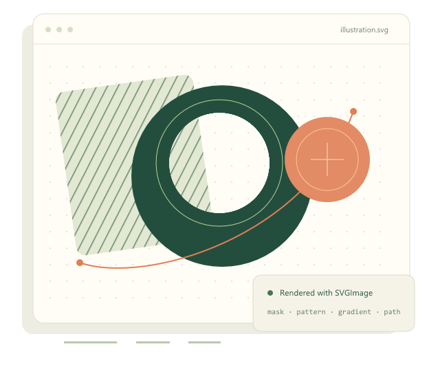
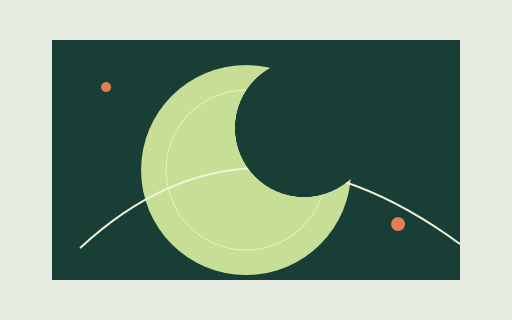
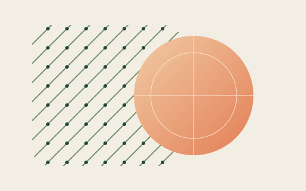
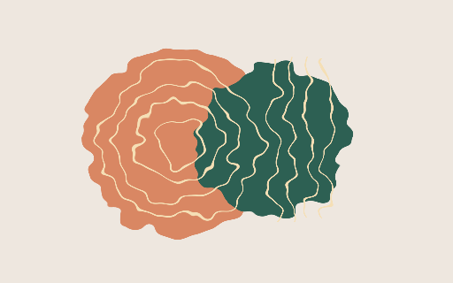
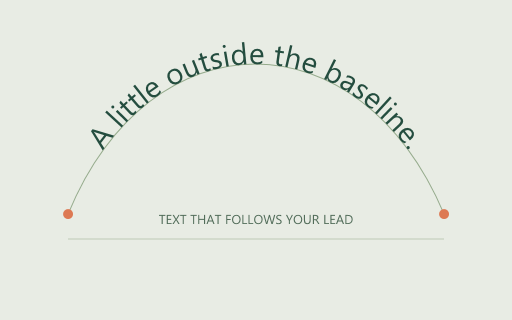
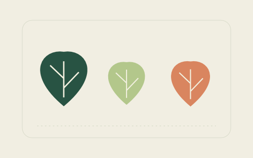
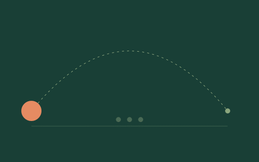
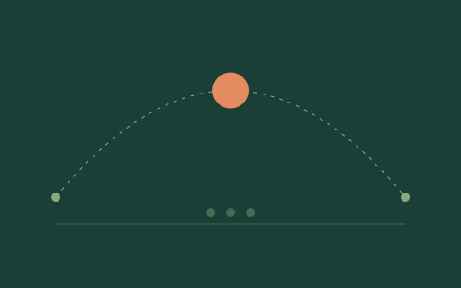

OPEN SOURCE · WINDOWS · MIT
SVG, naturally
at home in WPF.
From a single icon to an animated illustration. Bring scalable artwork into your app with a native WPF control and a Drawing-based renderer.
dotnet add package DotNetProjects.SVGImage
This site describes the current source, including unreleased additions. See the changelog for published package versions.

A SMALL GALLERY OF POSSIBILITIES
More than an icon viewer.
Actual SVGImage output. Each example links to its SVG source, ready to try in your own app.


Make room for negative space.


Paint beyond a solid fill.


Add a little turbulence.


Step outside the baseline.


Compose once. Reuse anywhere.



A little movement goes a long way.
Previews were rendered with the WPF renderer. The animation combines SMIL motion with CSS opacity keyframes. See the supported animation scope.
KNOW WHAT YOU CAN BUILD
A capable renderer.
A clear support story.
Paths and paint. Layout and reuse. Styling and motion. Find the supported pieces, their scope, and the details that matter for your SVGs.
Read the full support reference- Geometry & composition
- Paths, basic shapes, masks, clip paths, symbols, use elements and nested viewports.
- Paint & effects
- Gradients, patterns, grayscale, color overrides, turbulence, displacement, blur, blend and more.
- Type & style
- Text paths, styled spans, CSS selectors, specificity, custom properties and color functions.
- Native motion
- SMIL transforms and motion paths, CSS keyframes, easing, repeats, seeking and explicit click-start events.
FROM SVG FILE TO WPF CONTROL
Fits right into your XAML.
Load a local SVG or work directly with a WPF Drawing. Keep your artwork scalable, override its colors, or enable supported animation.
Installation & first steps<Window
xmlns:svg="https://github.com/dotnetprojects/SVGImage">
<svg:SVGImage
UriSource="Assets/illustration.svg"
UseAnimations="True"
SizeType="ViewBoxToSizeNoStretch" />
</Window>
THE PROJECT IS MOVING
A lot has changed.
A broader SVG toolkit.
Text paths, nested viewports, reusable patterns, motion paths, richer CSS and a growing raster filter pipeline. Plus safer path parsing and reference-image regression coverage.
Masks, grayscale, and native motion.
SVG masking, WPF-clock animation, CSS sprite sheets and symbol viewport fixes, alongside gradient color and button-sizing corrections.
BUILT IN THE OPEN